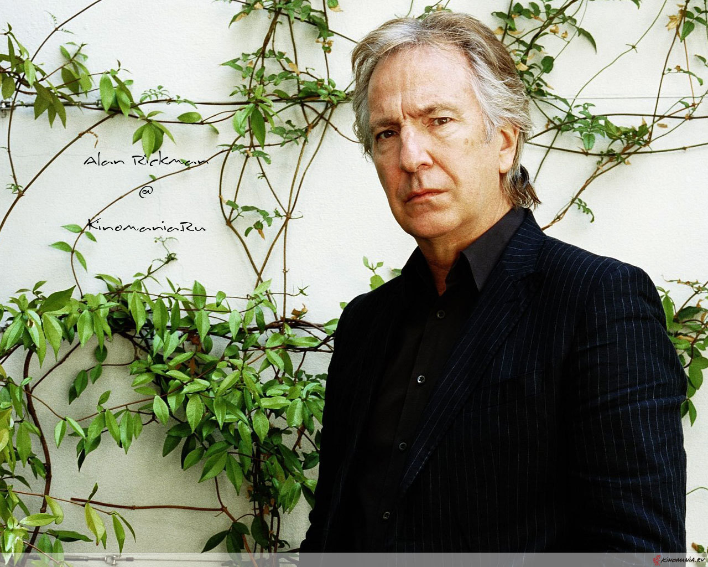
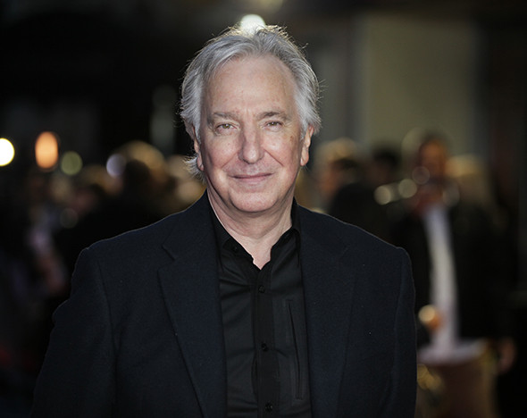
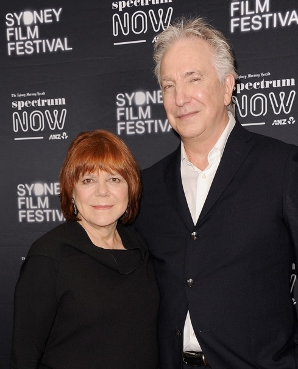
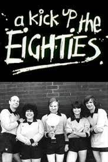
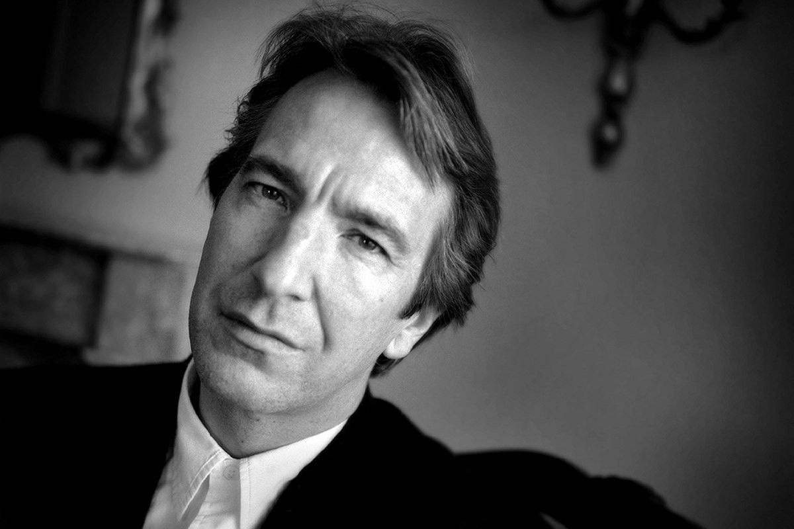

БиографияРанние годыРодился в Хаммерсмите в семье домохозяйки и рабочего фабрики. У Рикмана есть старший брат Дэвид — графический дизайнер, младший брат Майкл — тренер по теннису, и младшая сестра Шейла. Когда Алану было восемь лет, его отец умер от рака поджелудочной железы, и мать осталась одна с четырьмя детьми.  С детства осознавал, что в жизни можно рассчитывать только на себя, и старательно учился. За успехи в школе Рикман получил стипендию престижной лондонской школы Latymer. В этой же школе он впервые вышел на сцену в любительской постановке. После ухода из школы Latymer Рикман учился в Школе искусства и дизайна в Челси, а затем в Королевском колледже искусств. Благодаря университетам Рикман начал работать в качестве дизайнера для газеты Notting Hill Herald. В 26 лет Рикман оставил занятия дизайном, решив стать актёром. Он написал письмо в Королевскую академию драматического искусства с просьбой о прослушивании, и вскоре был туда принят. Он получил несколько премий за постановки, а также королевскую стипендию. Награды
 Личная жизньС 1977 года Алан Рикман жил вместе с Римой Хортон, с которой он познакомился в 1965 году. Спустя 47 лет знакомства пара узаконила свои отношения. Они тайно поженились в 2012 году в Нью-Йорке. Детей у пары не было.  КарьераПервое его появление на экране произошло на канале ВВС в 1981 г. в комедийном телесериале «A Kick Up the Eighties». Снимался во многих известных фильмах, в том числе в "Гарри Поттере".  СмертьАлан Рикман умер 14 января 2016 года в результате стремительно протекающего рака поджелудочной железы. Диагноз был поставлен в августе 2015 года, после того, как актёр перенёс микроинсульт.  |